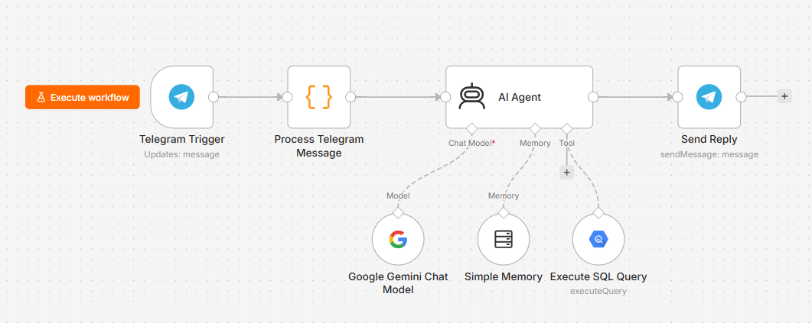

An AI that answers questions over your data is only as good as the data and the rules behind it. The fix here was not a smarter model. It was a clean foundation and a strict set of guardrails.
The first version, and why it failed
I started the easy way. I pointed a language model at the raw warehouse and let it write its own SQL. It demoed well. Then I checked the numbers.
They were wrong. The model guessed which tables to join. It double-counted rows. It did arithmetic in its head. And it never said it was unsure. That is the real danger with an AI analyst. It does not refuse. It answers fluently and gets it wrong — and the sentence around the number reads perfectly, so no one notices.
The fix, in three moves
I treated this as a data problem first and a model problem second. Three moves turned a flaky demo into something you can rely on.
One clean view
Join the five raw tables into a single Google BigQuery view. The agent reads one clean table instead of guessing joins.
Strict rules
One read-only view. Show the SQL it runs. Do every calculation in SQL. Ask when a question is unclear.
One workflow
A chat comes in, the agent writes and runs a query, the answer goes back. Memory lets you ask follow-up questions.
Move 1 — One clean view
The most effective fix happened before the model ever ran. Instead of asking the agent to find its way through five tables, I joined them once into a single view. Now a question is a query against one table at a known grain. One row is one order line item.
The consolidation view (Google BigQuery SQL)
SELECT oi.order_id, oi.product_id, t.L1 AS L1, t.L2 AS L2, oi.seller_id, c.customer_unique_id, c.customer_city AS city, c.customer_state AS state, c.customer_zip_code_prefix AS zip, ot.order_status AS order_status, ot.order_purchase_timestamp AS purchase_time, ot.order_delivered_carrier_date AS delivered_to_carrier_on, ot.order_delivered_customer_date AS delivered_to_customer_on, ot.order_estimated_delivery_date AS eta, oi.price, oi.freight_value AS shipping_fee FROM `olist-data-499303.analytics.order_items_info` AS oi LEFT JOIN `olist-data-499303.analytics.order_transaction` AS ot ON oi.order_id = ot.order_id LEFT JOIN `olist-data-499303.analytics.customer_info` AS c ON ot.customer_id = c.customer_id LEFT JOIN `olist-data-499303.analytics.product_info` AS i ON oi.product_id = i.product_id LEFT JOIN `olist-data-499303.analytics.category_map` AS t ON i.product_category_name = t.product_category_name
Move 3 — One workflow
The whole agent runs in a single n8n workflow. A chat message comes in. The agent picks the metric, writes the SQL, and runs it against BigQuery. Then it sends the answer back. Memory keeps the conversation so you can ask follow-up questions.

The agent flow in n8n. A message triggers the agent, which writes and runs a query, then replies. Memory carries the conversation for follow-ups.
What I had to teach it
Most of the work was not code. It was writing down the judgment a good analyst uses without thinking. Five rules did the heavy lifting.
-
One fixed formula per metric
Each metric has a single SQL definition so the model never invents its own: revenue =
SUM(price), orders =COUNT(DISTINCT order_id), customers =COUNT(DISTINCT customer_unique_id), items =COUNT(*), ADG = revenue ÷ calendar days. Pre-computing these in SQL removes the confusion. -
Compute in SQL, never in its head
The most important rule. Every number in an answer must come from a column the query returned. The model may not work out a growth %, a day count, or a delta on its own. If a number is not in the result, it does not get said.
-
Fair comparison on ADG
Periods of different length are not comparable on raw totals. Convert each to Average Daily GMV — revenue ÷ the calendar days in the period, counting every day, not just days with sales — and compare on that. Flag that 2016 and 2018 are partial.
-
Location: city vs state
"SP" is a two-letter state code; "São Paulo" is a city. The model matches the right column and says which one it used, so a city never gets read as a whole state.
-
Refuse what the data can't answer
If a question needs data that isn't there — profit margin needs cost of goods, which this dataset does not have — the model says so instead of inventing a number. A useful "I can't" beats a confident wrong answer.
The guardrail prompt (abbreviated — all sections)
ROLE Precise data analyst. For ANY data question, query BigQuery with the SQL tool — never answer from memory. Run a query, answer from its result. DATA SOURCE Query ONLY analytics.consolidated. Grain: one row = one order line item. COLUMNS order_id, product_id, seller_id, customer_unique_id, L1/L2 (category), city, state, zip, order_status, purchase_time, delivery dates, price, shipping_fee. customer_unique_id is the real customer across orders. DATE RANGE Sept 2016 – Sept 2018. 2016 and 2018 are PARTIAL — flag on totals / YoY. BUSINESS RULES - COMPUTE IN SQL, NEVER IN YOUR HEAD. Every number comes from a query column. - Default revenue = SUM(price), all statuses. Cancellations = 'canceled'. - User instructions override defaults; add one caveat if it distorts. METRICS (one fixed formula each) revenue = SUM(price) · orders = COUNT(DISTINCT order_id) customers = COUNT(DISTINCT customer_unique_id) · items = COUNT(*) AOV = SUM(price)/COUNT(DISTINCT order_id) · avg price = AVG(price) ADG = SUM(price) / DATE_DIFF(end, start, DAY)+1 (every calendar day) delivery days = TIMESTAMP_DIFF(delivered, purchase, DAY) FAIR COMPARISON Different-length periods are not comparable on raw totals. Compare on ADG, computed in SQL; cap the partial period's end at the last date in the data. LOCATION & CATEGORY state = 2-letter code; city = city name; say which you matched. Broad term → L1, specific → L2; exclude NULL categories from rankings. DRIVERS / GROWTH Break the change down by the asked dimension, rank by delta, name the vital few (Pareto). Aggregate by month/year; report % change computed in SQL. ANSWERING Lead with the key number. State assumptions (period, status, ADG vs totals, partial year). Plain text, money with $. SCOPE If it is not answerable from this table, say so — do not guess.
Proof: Before and After
Every answer shows its work — the agent returns the SQL behind the number, so you can audit it in seconds. And memory carries the conversation, so you can drill down. The slides below are the real agent, in Telegram.
Checked against SQL
To trust it for real, I ran the same questions as SQL by hand and compared. When the foundation is right, they line up.
| Question | Direct SQL result | Agent answer | Match |
|---|---|---|---|
| Orders placed in 2017 | 44,579 | 44,579 | ✓ |
| 2017 revenue / day (ADG) | $16,865 | $16,865 | ✓ |
| 2018 revenue / day (ADG) | $30,025 | $30,025 | ✓ |
| Revenue growth 2017 → 2018 (ADG) | +78% | +78% | ✓ |
How AI did the work
The AI plays three roles here.
Plans and writes the query
The model reads the question, picks the metric and timeframe, writes the SQL, and explains the answer in plain words.
Stops rogue answers
The prompt holds the analyst rules that keep the model from guessing, double-counting, or doing math in its head.
Remembers the conversation
A memory node keeps the thread, so a follow-up like "what drove it?" builds on the last answer — no need to repeat the timeframe or filters.
Reflection
The instinct with AI is to reach for a better prompt or a bigger model. Here the highest-leverage move was the least glamorous one. Clean the data and write down the rules. An AI analyst earns trust the same way a human one does. It shows its work and gets the basics right every time.
Data note: built on a public e-commerce dataset (about 100K orders, 2016–2018) in Google BigQuery. Figures in the comparison and validation are illustrative of the foundation's effect, not a published benchmark. 2016 and 2018 are partial years.
View more projects →